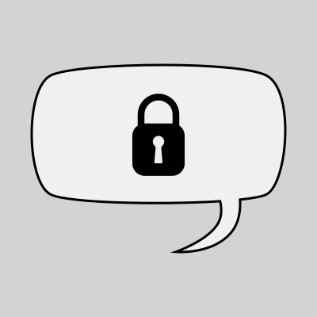

<link rel="stylesheet" href="../css/main.css">

<section class="modal-title">
Shielded
</section>

<section class="modal-body">
Shielded was my first large-scale project. Developed for a high-school assignment, Shielded is a prototype of an end-to-end encrypted messaging app.<br><br>
While Shielded isn't polished and doesn't run on every device under the sun, it works. For a 18 year old that had never made more than basic scripts in Python, this was a big and exciting step forward for me.<br><br>
Shielded uses PGP to encrypt messages in two layers. The message itself is encrypted so that only the recipient can read it (not even the server has access!) and then details such as the sender and recipient are encrypted to prevent interception between users and the server.
</section>


<section class="modal-image">

</section>

<div class="modal-link"><a href="https://github.com/ConnorMattson/Shielded-Messaging-App" target="_blank"></a></div>